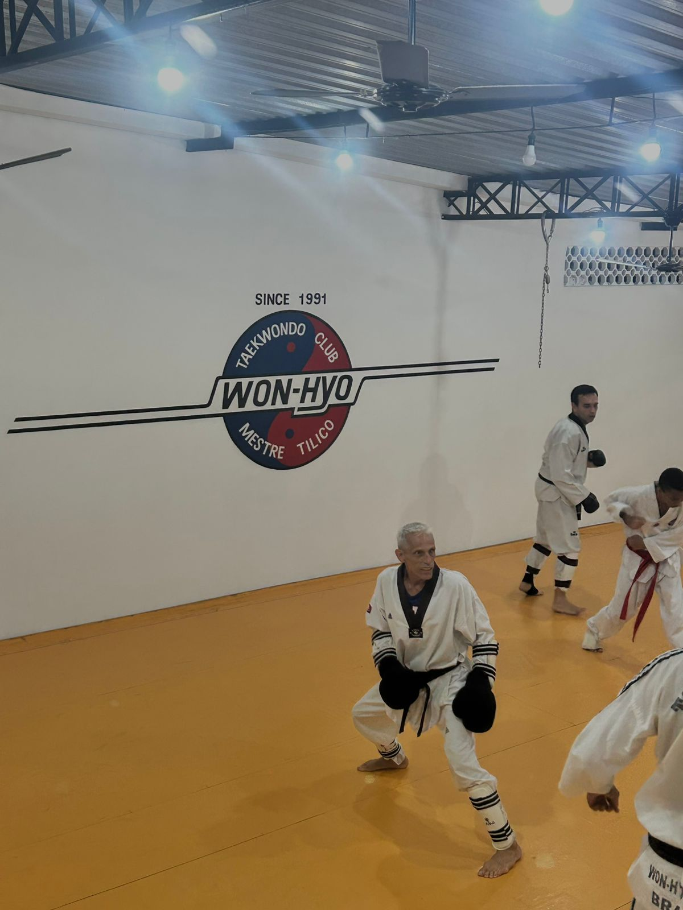
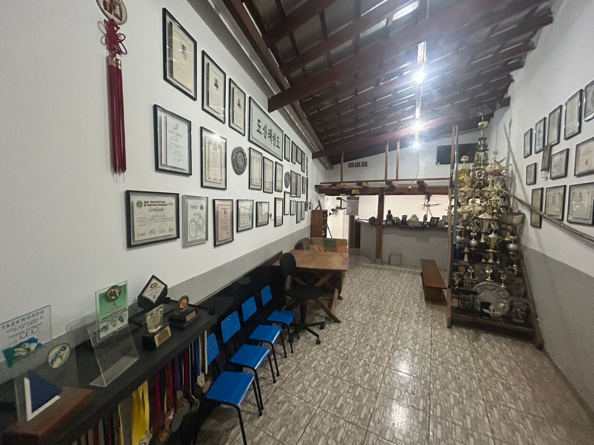

Meu filho ganhou mais disciplina, confiança e foco depois que começou no Taekwondo.
M
Mariana S.Mãe de aluno · Turma Infantil
Mais que uma arte marcial, o Taekwondo é uma jornada de disciplina, saúde, respeito e evolução — para todas as idades.
Nascido em Campinas, em 5 de maio de 1963, é ex-atleta de taekwondo brasileiro. Em 21 de dezembro de 1987, ainda como lutador, aos 24 anos, um acidente de automóvel custou-lhe 100% da visão do olho esquerdo — mas, longe de afastá-lo das competições, ele transformou a deficiência em motivo para aprimorar a técnica e se preparar para se tornar o técnico mais vitorioso do Brasil.
Como treinador, é o maior campeão da história do taekwondo nacional, acumulando mais de 300 títulos em todas as categorias ao longo de vinte anos de carreira. Reconhecido como um dos maiores reveladores de talentos do país, foi o responsável direto pela preparação e descoberta dos principais atletas nacionais.
Com seus atletas, conquistou campeonatos Mundiais, Pan-Americanos e a Olimpíada de Atenas, e ainda atuou como comentarista de Taekwondo no canal ESPN.
Cada ponto no mapa marca um lugar onde o Mestre Tilico subiu ao pódio.
Os cinco princípios que guiam cada aluno dentro e fora do tatame.
Um espaço seguro, disciplinado e acolhedor, com turmas para crianças, jovens e adultos — onde cada aluno encontra o seu lugar.


A confiança de famílias e alunos é a maior conquista do WON-HYO.
Meu filho ganhou mais disciplina, confiança e foco depois que começou no Taekwondo.
A academia se tornou um espaço de evolução física, mental e espiritual para mim.
O Mestre Tilico ensina muito mais do que golpes. Ele ensina valores para a vida.